Introduction to version control with Git
Scientific workflows: Tools and Tips 🛠️
2025-07-17
Scientific workflows: Tools and Tips 🛠️
📅 Every 3rd Thursday 🕓 4-5 p.m. 📍 Webex
- Slides and material provided online
- Credit points: send me a private message/email with your name and email
Why version control?
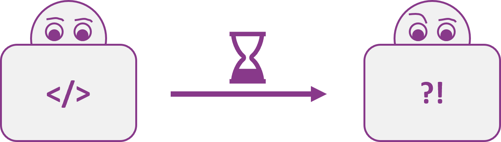
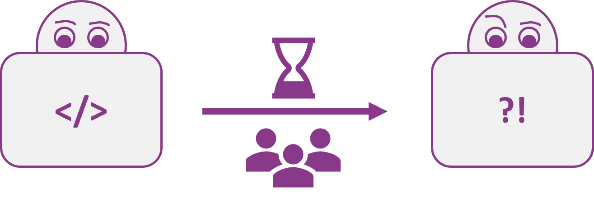
Why version control?
Git is like a Lab Notebook for your scripts
- Tracks every change in your scripts
- Helps you recover older versions
- Enables safe and easy collaboration
- Makes it easy to share your work with others
Today
- Introduction to Git
- Simple Git workflow in theory and practice
- Publish your work on GitHub
- Find detailed how-to guides on the website
What is Git?
Open source and free to use version control software
Quasi standard for software development
Complete and long-term history of every file in your project
A whole universe of other software and services around it
What is Git?
For projects with mainly text files (e.g. code, markdown files, …)
Basic idea: Take snapshots (commits) of your project over time
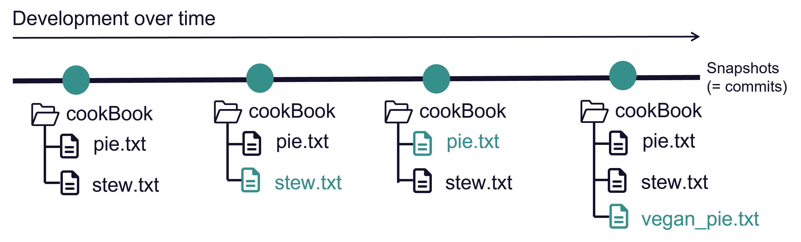
- A project version controlled with Git is a Git repository (repo)
Version control with Git
Git is a distributed version control system
Idea: many local repositories synced via one remote repo
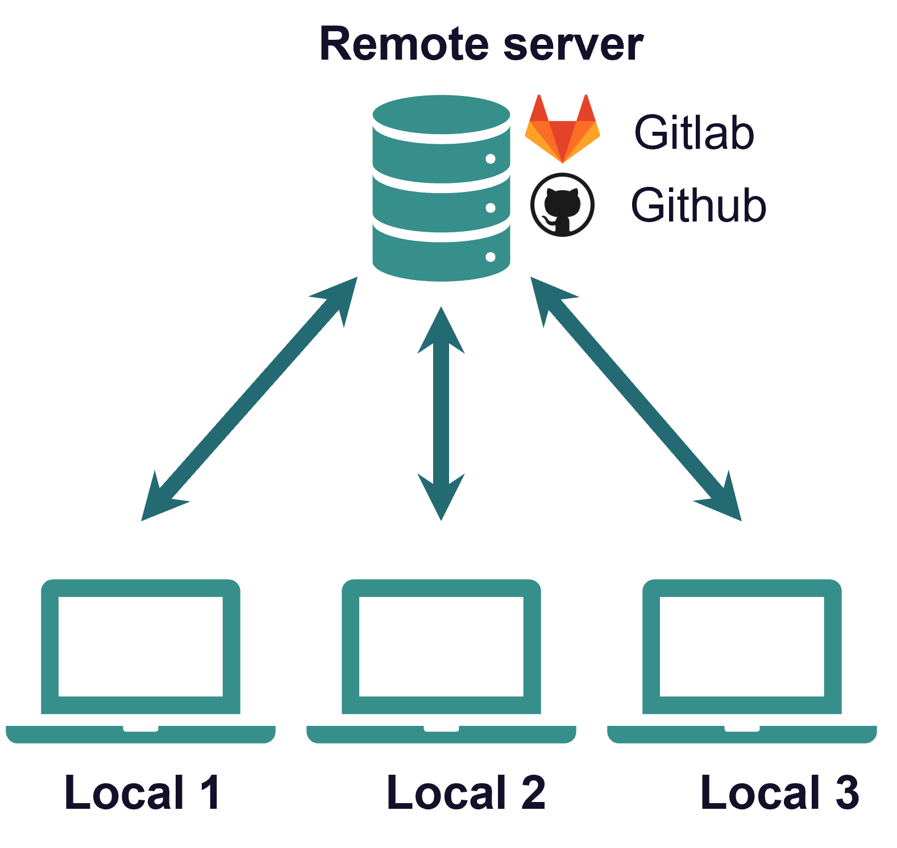
How to use Git
After you installed it there are different ways to interact with the software.
How to use Git - Terminal
Using Git from the terminal
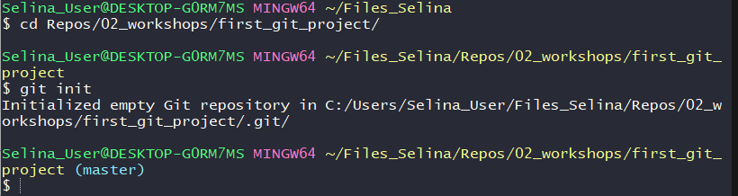
➕ Most control
➕ A lot of help/answers online
➖ You need to use terminal 😱
How to use Git - Integrated GUIs
A Git GUI is integrated in most (all?) IDEs, e.g. R Studio, VS Code
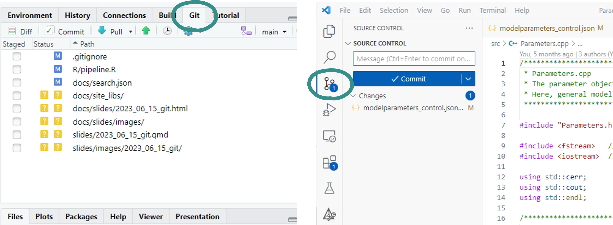
➕ Easy and intuitive
➕ Stay inside IDE
➖ Different for every program
How to use Git - Standalone GUIs
Standalone Git GUI software, e.g. GitHub Desktop, Source Tree, …

➕ Easy and intuitive
➕ Use for all projects
➖ Switch programs to use Git
How to use Git
Which one to choose?
- Depends on experience and taste
- You can mix methods because they are all interfaces to the same Git
- We will use GitHub Desktop
- Beginner-friendly, intuitive and convenient
- Nice integration with GitHub
Tip
Have a look here to find How-To guides for the other methods as well.
The basic Git workflow
git init,git add,git commit,git push
Example
A cook book project to collect all my favorite recipes.
In real life this would be e.g. a data analysis project, your thesis in LaTex, a software project, …
Step 1: Initialize a Git repository
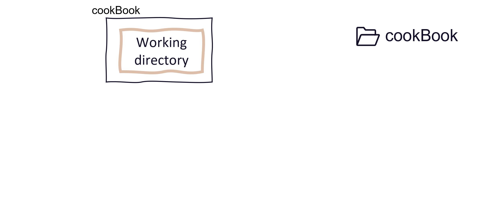
Step 1: Initialize a Git repository
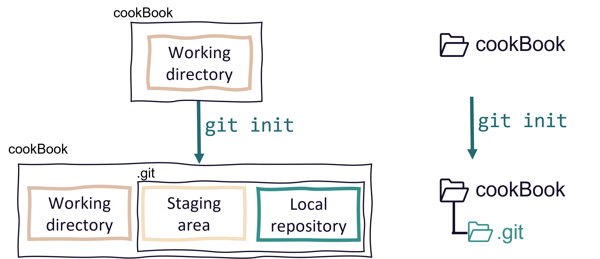
Step 1: Initialize a Git repository
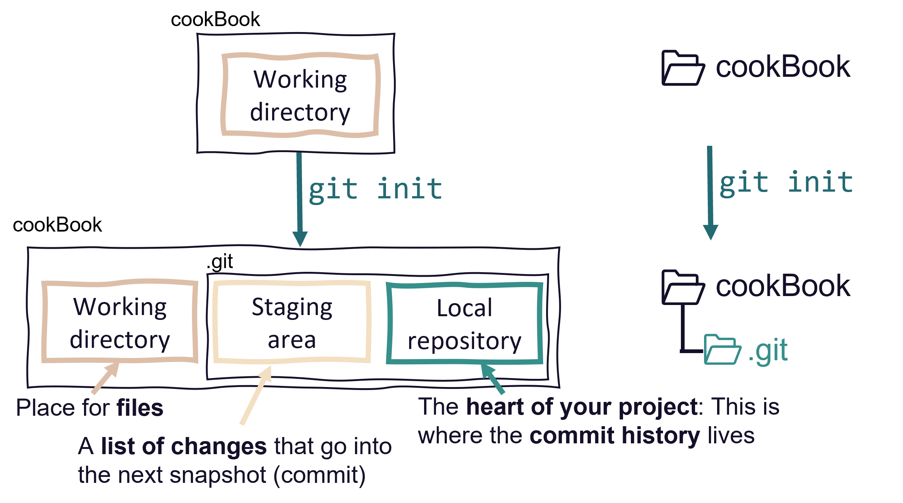
Step 2: Add and modify files
Git detects any changes in the working directory
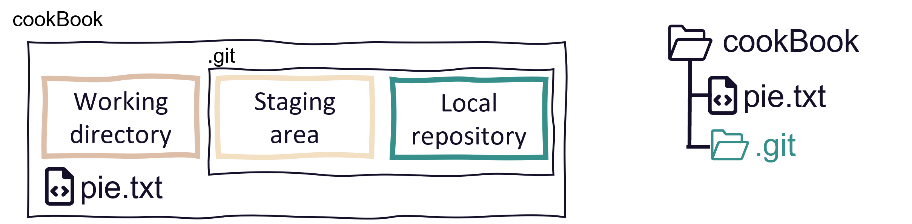
Step 2: Stage changes
Staging a file means to list it for the next commit.
Step 2: Stage changes
Staging a file means to list it for the next commit.
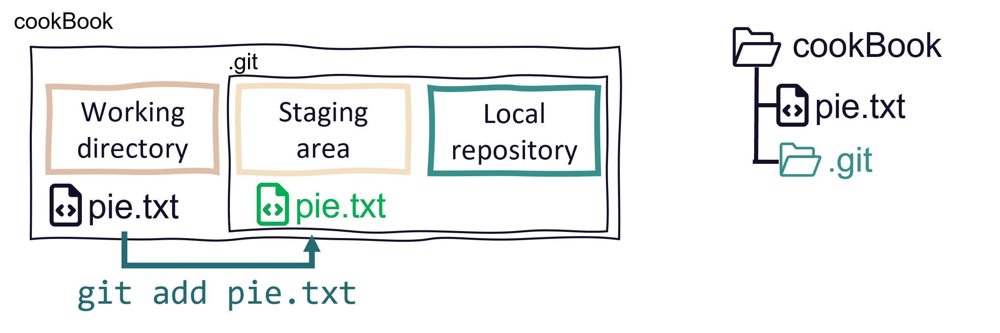
Step 3: Commit changes
Commits are the snapshots of your project state
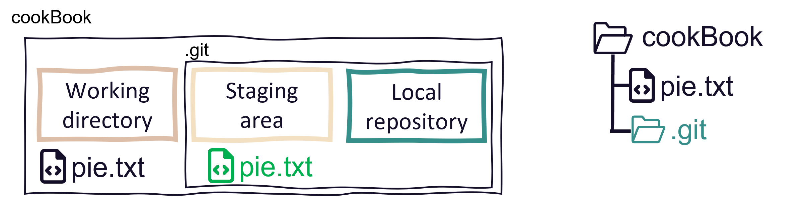
Step 3: Commit changes
Commits are the snapshots of your project state
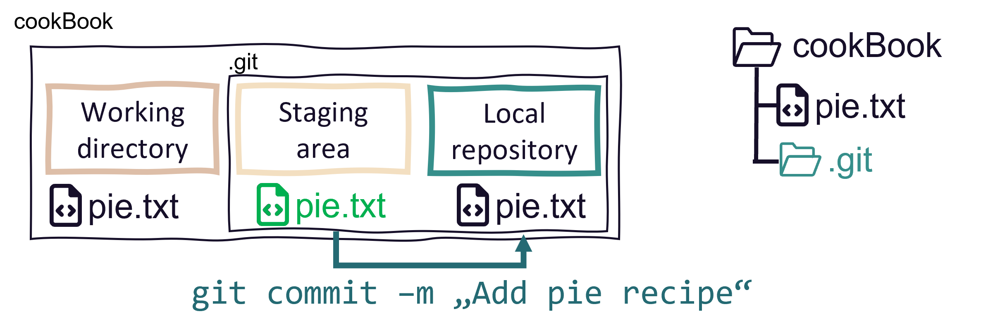
Step 3: Commit changes
Changes are part of Git history and staging area is clear again
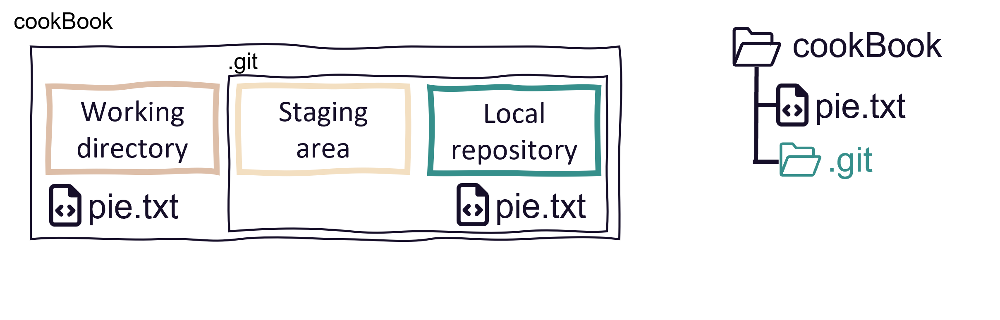
The commit history
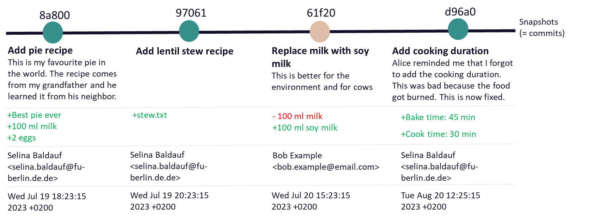
Good commit messages

Good commit messages
Good commit messages are descriptive and helpful.
✔️
See here for more details on good commit messages.
Step 4: Share changes with the remote repo
Use remote repos (on a server) to backup, synchronize, share and collaborate
- can be private (you + collaborators) or public (visible to anyone)
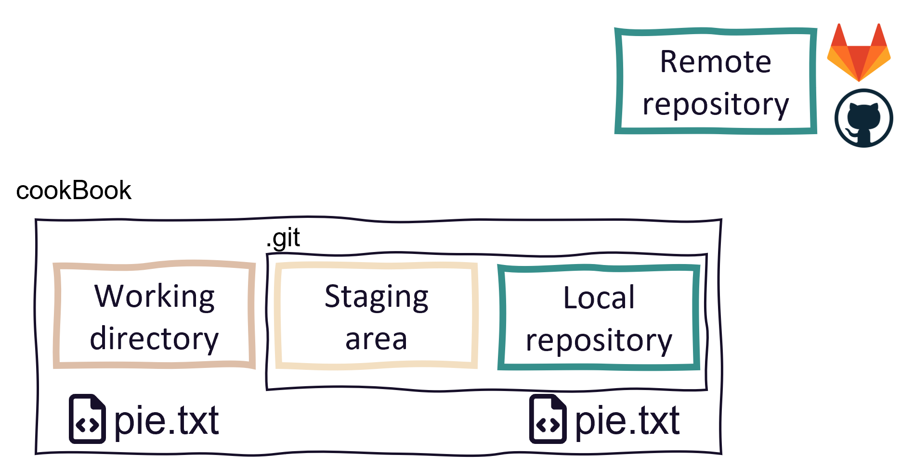
Step 4: Share changes with the remote repo
Use remote repos (on a server) to backup, synchronize, share and collaborate
- can be private (you + collaborators) or public (visible to anyone)
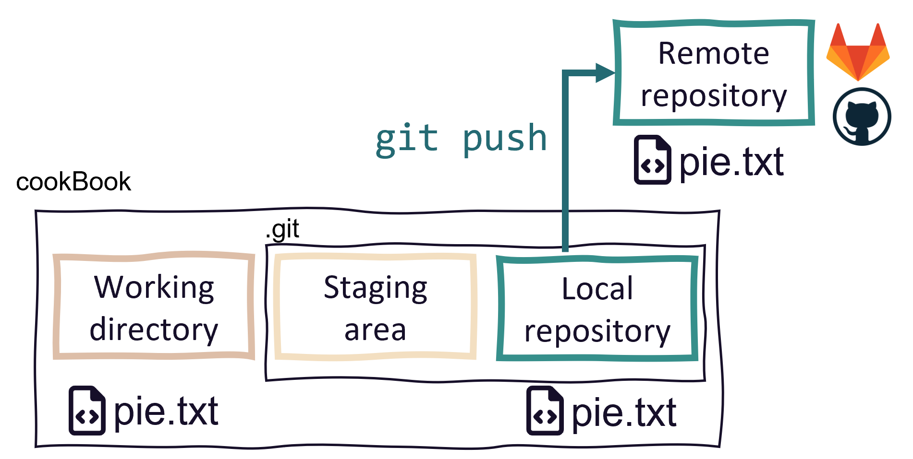
Recap
Basic Git workflow:
- Initialize a Git repository
- Work on the project
- Stage and commit changes to the local repository
- Push to the remote repository
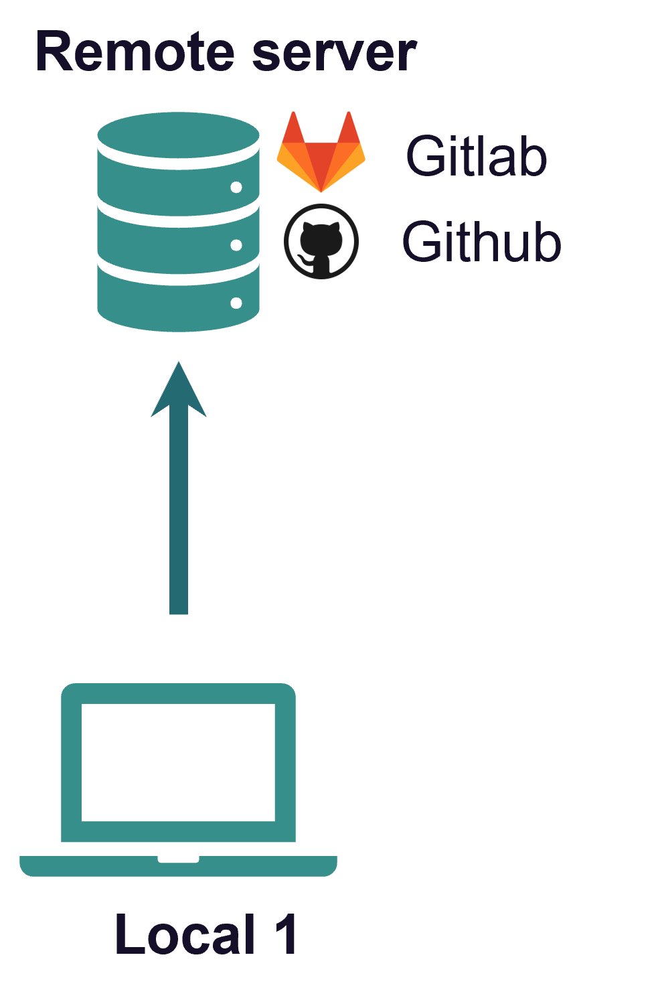
Recap
Basic Git workflow:
- Initialize a Git repository
- Work on the project
- Stage and commit changes to the local repository
- Push to the remote repository
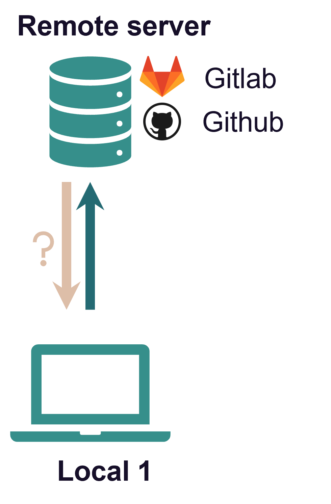
Recap
Git is a distributed version control system
- Idea: many local repositories synced via one remote repo
- Collaborate with
- yourself on different machines
- your colleagues and friends
- strangers on open source projects
Get a repo from a remote
In Git language, this is called cloning
You can clone all public repositories and private repositories if you are a owner/collaborator
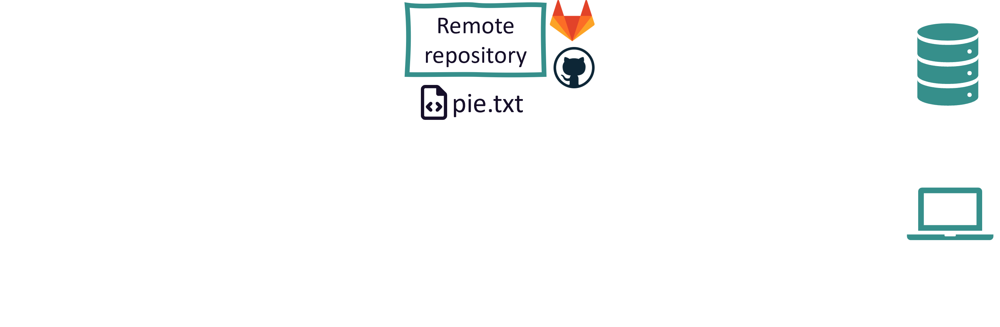
Get a repo from a remote
In Git language, this is called cloning
You can clone all public repositories and private repositories if you are a owner/collaborator
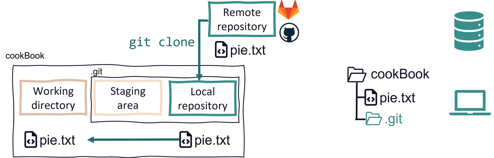
Get changes from the remote
- Local changes, publish to remote:
git push - Remote changes, pull to local:
git pull
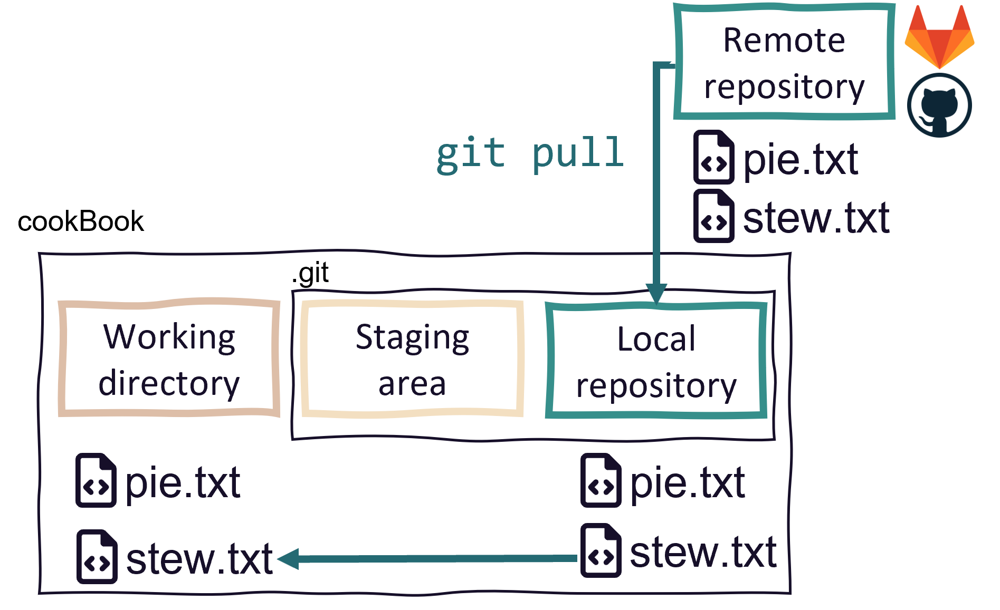
A simple collaboration workflow
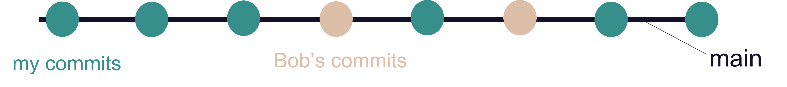
- One remote repo on GitHub, multiple local repos
- Idea: Everyone works on the same branch
- Pull before you start working
- Push after you finished working
A branching-merging workflow
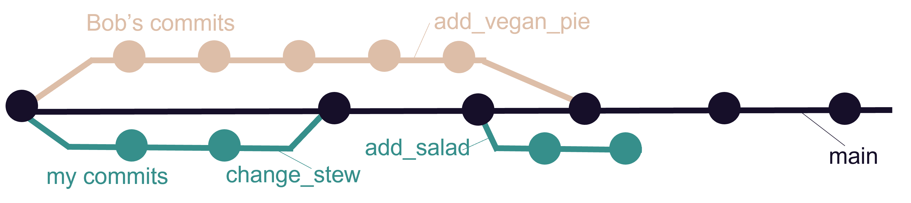
- One remote repo on GitHub, multiple local repos
- Idea: Everyone works on the their separate branch
- Merge branch with the main when work is done
- Check out the How-To guide for details
Publishing your work
Remote repositories
- There are commercial and self-hosted options for your remote repositories
- Commercial: GitHub, Gitlab, Bitbucket, …
- Self-hosted: Gitlab (maybe at your institution?)
- Please be aware of your institutional guidelines
- Servers outside EU
- Privacy rules might apply depending on type of data
Public repositories
- Making a repository public is a good way to publish and share your work
- Always add a README.md file
- Always add a LICENSE file
- This is important to clarify how others can use your work
- Connect your repo with Zenodo to get a DOI
If you are interested, browse some nice GitHub repositories for inspiration (e.g. Git training repository, Computational notebooks, Repo to publish code from a manuscript)
Outlook
- Git can do much more than we covered today
- Complex collaboration workflows with code review steps
- Rolling back to previous versions
- Ignoring files from the repository
- …
- GitHub et al. offer many more features
- Issues, pull requests, code review, project management, …
- Host websites, wikis, …
- Start with the basic workflow and build on that
Next lecture
Summer/Conference break in August and September!
Topic of next lecture t.b.a.
📅 16th October 🕓 4-5 p.m. 📍 Webex
🔔 Subscribe to the mailing list
📧 For topic suggestions and/or feedback send me an email
Thanks for your attention
Questions?
Summary of the basic steps
git init: Initialize a git repository- Adds a
.gitfolder to your working directory
- Adds a
git add: Add files to the staging area- This marks the files as being part of the next commit
git commit: Take a snapshot of your current project version- Includes time stamp, commit message and information on the person who did the commit
git push: Push new commits to the remote repository- Sync your local project version with the remote e.g. on GitHub
Undo things
git revert
Revert changes
- Use
git revertto revert specific commits - This does not delete the commit, it creates a new commit that undoes a previous commit
- It’s a safe way to undo commited changes
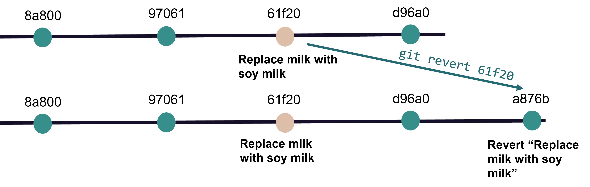
Go back in time
git checkout
Checkout a previous commit
Take your work space back in time temporarily with git checkout
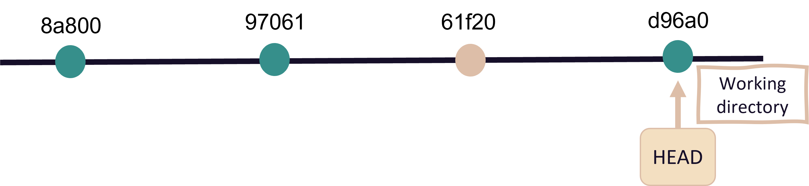
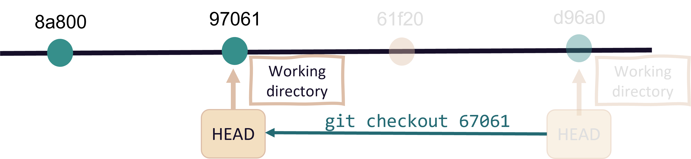
Ignoring files with .gitignore
Ignore files with .gitignore
- Useful to ignore e.g.
- Compiled code and build directories
- Log files
- Hidden system files
- Personal IDE config files
- …
Ignore files with .gitignore
Create a file with the name
.gitignorein working directoryAdd all files and directories you want to ignore to the
.gitignorefile
Example
*.html # ignore all .html files
*.pdf # ignore all .pdf files
debug.log # ignore the file debug.log
build/ # ignore all files in subdirectory buildSee here for more ignore patterns that you can use.
Selina Baldauf // Version control with Git